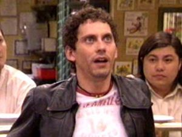

El Luisma
 De: La Frikipedia, la enciclopedia extremadamente seria.
De: La Frikipedia, la enciclopedia extremadamente seria.
De la serie grandes personajes:
¡Qué pasa, que el Luisma es tonto no, se metió cosas que no debía y sa quedao tonto!
| Nacimiento
|
En un cesto
|
| Muerte
|
De risa
|
| Ocupación
|
Comer pipas con el Barajas
|
| Nacionalidad
|
Esta por determinar
|
| Malo o bueno
|
Regular
|
| Atentados contra la humanidad
|
Casarse con la Macu y tener un hijo negro (atentado contranatura, vamos)
|
| Religión
|
La metadona
|
| Notas
|
10 siempre diez
|
«Si el camello no tiene caballo, te entra el mono»
~ Luisma sobre las drogas
«Claaaro, como el Luisma es tonto...»
~ Luisma en el día a día
«Jajajaja, la capital de Brasil Brasilia dice, y la de Rusia Rusilia no te digo»
~ Luisma sobre geografía
El Luisma es (y será), seguramente, el personaje más tonto de todos los tiempos, es capaz de fumar un porro con papel de aluminio y acabárselo.
El Luisma es el amigo de Paz, que es la amiga de la Lore, que es la hermana del Jonathan, que es el nieto de Eugenia, que es la madre de Aída, que es la limpiadora de la serie 7 vidas, que era una serie de Telecinco,que es una cadena de televisión.
Nacimiento
Dicen que el Luisma nació en una cesta llena de porros, pero en realidad no era así, la cesta era de jeringas de yonkis.
Cuando nació, el medico lo saco con un desatasca W.C. y se le metió un poco de mierda en el oído, por eso es tan tonto.(tonto?, tonto?!?!?!!!!!! el luisma?, dios, es un ser de extremada inteligencia solo que los simples mortales no podemos captarlo, solo Batman y norris le entienden)
Infancia
A los 3 años, Luisma ya estaba trabajando para anuncios de tabaco, le obligaban a fumarse diez porros diarios, pero le mentían, decían que eran cigarrillos legales, así que en los anuncios, no se quejaba de lo malos que eran sus cigarrillos.
Un día, a los 6 años, el luisma se encontró en el suelo una pastilla con un dibujo de un conejo y se la tomó. A partir de ese día, una de sus aficiones, es meter conejos en un tapper durante 5 horas, sacarlos, y comérselos.
A los 10 años conoció a Paz, una chica que el destino trágico, la llevará a ser Puta (espera, ¿¿he dicho trágico?? jajaja!!)
Un día el Luisma le tiró los tejos a Paz, y Paz le tiró de su miembro sexual masculino. Desde ese dia empezó una agradable amistad sadomasoquista.
Juventud y pa'lante
 El Luisma en un ataque de inspiración
A partir de los 13 años, Luisma descubrió algo que nunca había hecho, ¡ahora podía ver las películas para mayores de 13 años! Esto lo marcó. Con 14 años, volvió al curro de la tele, pero esta vez, no anunciaba tabaco, ahora estaba en un anuncio hippie, anunciando mariguana (Marihuana para los catetos). Aparecía fumando porros como churros (que también se los fumaba, pero ahora mas que nunca, ya que antes se había aficionado a ellos). Decía que era más honrado que fumar cigarrillos.
Pero lo que en realidad le produjo curiosidad fue cuando reveló los secretos del objeto cilíndrico y redondeado que poseía; ahora sabía que ademas de usar el porro para fumar, podía usarlo para hacerse el chulo, para volverse tarado (que ya lo estaba) y sobre todo, para tirarlos por el balcón y darle al primer pringado que pasaba por allí, algunos no tan pringaos, lo aprovechaban y se lo fumaban, entonces el Luisma se cabreó y le tiró su armario por el balcón.
Pero un día esperado (porque lo vio en el horóscopo) se le apareció en la calle al rey de los hippies (Chema), y le dijo que si quería ser como él debía pasar las pruebas de alcoholemia borracho y que diese 0.0º de alcohol. Lo intentó, pero por desgracia no sucedió y lo metieron en la cárcel (con 14 años) por conducción temeraria, borrachez y 900 kilitos de cocaína, que el Luisma insistía de que era azúcar e hizo una demostración con una pajita, su nariz, un carné de socio de alcohólicos no anónimos en una mesa, que después de estar flipando y viendo estrellas como panes, dijo: - pos va ser verdad que esto no es azúcar, con el de mi casa, duran más los colorines joder.
Ya en la cárcel se encontró con un viejo amigo, bujarra) usaba uno de sus productos, y empezaba a limpiar y a mangar las cosas de la casa. El Luisma decía que lo conocía de que siempre que fumaba porros lo veía cantando -es mi magia y mi ¡¡poder!!, que por supuesto, Don Limpio no le reconocía, así que Luisma se puso a llorar.
Cuando salió de la eterna prisión (1 día), se encontró otra vez con el rey de los hippies, el Luisma lo mató y se fumó todos los porros que poseía (tenía pa los catetos) el hippie ese.
El día que más marcó a Luisma fue cuando encontró 10 kilitos coca en una bolsa, pero por desgracia pasaba la pasma, y antes de que le pillasen, se la esnifó toda en un segundo (¡¡qué máquina!!). Cogió tal dosis de coca, que se puso a bailar una sevillana delante de la policía. Minutos después, estaba en al hospital, pidiendo más coca. Los parias del hospital le dieron Coca Cola, y como Luisma iba medio cegado, se la esnifó (¡toma, otro atracón!). Un día después, se despertó en un centro de desintoxicación, y sin saber donde estaba, se sacó un porro del bolsillo, y se lo fumó delante de todos. La señorita Rottenmeyer ,que estaba por allí, lo envió a la calle de un merecido puntapié en los cojones. A partir de ese día dejó de fumar y esnifar (tanto).
A los bastantes años (unos 25), Luisma trabajó en la tele, por fin, en un trabajo honrado y respetado: ¡¡Homo Zapping!! Hacía de presentadora en el Corazón, corazón, de Cani en El diario de Patricia, de Bertín Osborne (medio alcohólico aposta) y de Raquel Revuelta, la de estrenos de cartelera con frases como: -Hoy, en estrenos de cartelera, le presentaremos la famosa película de... esto... como se llamaba... si, este de una mujer rubia que vive en una casa, y ve a otras personas que se imagina, si esta la de... Todo el mundo se reía hasta que el Luisma dijo que de que se reían, que él lo hacia en serio. A partir de eso, ya no volvió a aparecer en Homo Zapping.
Más tarde le cogieron en un barrio para hacer del tonto del barrio, este trabajo se lo tomó muy en serio, por eso sigue en la serie esta tan seria.
Actualidad
Ahora vive tranquilo en un barrio de mierda, pero con muchos amiguetes subnormales, y varios pillaos, entre ellos su amigo Barajas (que no se sabe de donde masoca con Paz, aunque se lió con la sobrina del Mauricio, que es más de pueblo que una gallina. Está a punto de tener un hijo, que no sabremos si más tonto que él o más bruta que su madre (o una mezcla de los dos, ¡¡qué horror!!).
Ya ha tenido un hijo, el Luisma. Eso si ¡¡¡¡¡NEGRO!!!!!. Tranquilos aún no se sabe si es tonto como el Luisma porque, aunque no sea suyo, todo se pega. Tampoco se sabe quién es el verdadero padre. Puede ser el negro del top manta, Apu Nahasapeemapetilon (el Indio del Badulaque de los Simpsons) o incluso BATMAN!!!! tendremos que esperar aver si desarolla un pene hidraulico para saber si es de batman.
El Luisma cuida de su "hijo" mientras que la Macu se tira al Barajas y así forman una familia feliz. Y digo yo, ya que el barajas y el Luisma compartían la metadona, ¿por qué no hacen un trío? Porque actualmente El Luisma consiguió que Paz le hiciese caso y saliesen juntos, aunque para ello Paz tuviese que dejar el oficio de puta (NOOOOOOOO!!!!).
Hechos de El Luisma
El Luisma, discutiendo por un mundo justo.
El Luisma, ¿¿ganando o perdiendo??.
- El Luisma se pinchó un caballo de oros de la baraja española en el brazo.
- El Luisma se vistió de galleta para decirle a Paz lo siguiente: -¡¡Paz!!... líate conmigo... ¡¡que soy una galleta y necesito mojar!! Al final la galleta se la llevó él.
- El Luisma ha sido el peor boxeador de la historia.
- El Luisma ha hablado con su padre, muerto, por la cosa esta de el vaso en la mesa y las velas encendidas.
- El Luisma se acabó un porro envuelto en papel albal.
- El Luisma se tiró por la ventana de su casa.
- El Luisma ha conocido a Mr. Proper, se fumaron unos porros juntos.
- El Luisma ha visto más colores que el Windows Vista.
- El Luisma no bebe cerveza, se la esnifa.
- El Luisma cometió 73.949.019.374 faltas de ortografía en la frase mi mama me mima.
- El Luisma dice que calculó 19.999.999.999.999.999.999 por 0 y le salió un número más grande que infinito.
- El Luisma duerme en un banco, en medio de la calle.
- El Luisma dice haber sido abducido por un ovni y que le habían vuelto más tonto de lo que estaba. Todo el mundo sabe que miente, no se puede ser más tonto.
- El Luisma se hizo millonario vendiendo perritos calientes, pero eso acabó pronto, los de Greenpeace le boicotearon el negocio.
- El Luisma hizo el test de inteligencia y sacó el 0,00000000000000000000000000000000000000000000000000000000000000000001 de coeficiente intelectual, ¡¡SUPERANDO A PETER GRIFFIN!! Se dice que copió.
- El Luisma se pregunta como dibujan los científicos las rayas de las pastas de dientes.
- El Luisma dice haber estado en un botellón donde estaban: David el gnomo, Los pitufos, los teletubbies, Pikachu, Ash Ketchup, King Kong, Bill Gates, Marylin Monroe, Einstein, Gólum, El Papa Beneadicto 16, Carlos Jesús, Mortadelo, Ofelia, Astérix, el oso yonky, caperucita verde, la daltónica, copito de nieve, Aznar, Sadam Huseim, Naruto, Freddy Krueger, Mary Poppins, Frodo, Sauron, el garbanzito feroz, R2D2, Yoda, Aladino y el genio, Carlos Sobera, 200 vikingos, Ana Obregón, el rey de los Hippies, Un elefante rosa, a 42 digimones, Miauz, El Team Rocket (despega de nuevo), Aída, un pez mu gordo, el prota de splinter cell, el Demonio, un elefante, la abeja azteca, Harry Potter, Frankenstein, el Cuñaooooo, Vin Diesel, 2 camiones, un porro viviente,el calvo de Lidl, IP anónima y 21.000 zombies de shakespeare (sexpir).
- El Luisma se fumó una Amapola.
- Ha tenido un hijo negro.
- Se ha tirado a la macu(Y el Barajas también, pero fue él quien "le abrió la flor")
- El Luisma usa los condones para hacer globos de agua.
Records de el Luisma
El Luisma, haciendo (fumando) lo que mejor sabe.
El Luisma, en su reto de gilipolleces

Yamcha es colega de parranda del Luisma.
- El Luisma cometió 73.949.019.374 faltas de ortografía en la frase mi mama me mima.
- El Luisma ganó un record Guinness por estar una hora sin parar de partirse y mondarse.
- El Luisma dijo más de 47.398.001 gilipolleces en 5 minutos.
- El Luisma estuvo borracho durante 2 semanas, 5 días, 14 horas, 36 minutos, 28 segundos, 13 centésimas de segundo y 376 milésimas de segundo. Después tuvo resaca durante 1 semana y 3 días.
- El Luisma ha aportado una cantidad ilimitada de gilipolleces al vocabulario barriobajero español.
- El Luisma ha intentado ligar con Paz más de 26.907.468.108.453 pares de veces.
- El Luisma tardó 40 días en averiguar cuanto era 112.534.661.466.
- El Luisma estuvo viviendo en un banco en medio de la calle (el Luisma bank) durante 9 meses y 29 días.
- El Luisma se esnifó la raya de cocaína más grande del mundo, medía 31 metros, 62 centímetros, y 19 milímetros. Tras eso, estuvo en un estado de shock durante 3 días.
- El Luisma se fumó 100 porros de papel albal en 5 minutos.
- El Luisma se fumó 2.986.356.266.045.134 porros en 20 minutos.
- El Luisma se bebió 73 cervezas Cruzcampo en un minuto, luego cogió un pedo tan grande, que eructó y arrasó el muro de Merlín (o era de Berlín).
- El Luisma ha ido 30.891 veces al centro de desintoxicación, pero acabó siempre igual, expulsado de un puntapié en los cojones de la señorita Rottermeyer.
- El Luisma ha sufrido dos fracturas de brazo en el brazo izquierdo, se rompió la mano del brazo derecho, se torció 180º el tobillo del pie izquierdo, tuvo una esguince en el fémur de la pierna derecha, y se le rompieron 26 costillas, solo en un minuto de una partida de ajedrez.
- El Luisma mató de un plumazo a 20 hormigas.
- El luisma puede encender porros con el pensamiento
- El luisma jugó a futbol, se le conocía como luismiño
- El Luisma se bebió 2 botellas de lejía.
- El Luisma ha dicho más de 61.826.340 de veces lo de que el Luisma es tonto.
- El Luisma ha probado más de mil tipos de porros.
- El Luisma estuvo de resaca 1 año.
- El Luisma rompio un record al eructar 1 año,3 meses,1 semana,5 dias,2 horas,1 minuto,26 segundos,9 decimas de segundo,23 centecimas de segundo,55 milesimas de segundo.
- El Luisma ganó a las magic contra un espejo.
- El luisma entablo conversacion con el pene de un gato,Durante el coito
Acabó en la cárcel por culpa de
IP anónima.
Fracasos del Luisma
1. El Luisma intentó batir el reto de sacar la calculadora del Windows XP
113 veces, pero no pudo por dos motivos: No sabía donde coño estaba la calculadora (Fue a buscarlo en el cajón y no la encontro, ahí se cansó y se hizo un porro con papel de aluminio); y encima no tenia ordenador (Dice la gente que el Luisma robó el portátil de Fidel pero al no saberlo enchufar cuando aparecía el mensaje de "batería baja" y se apagaba, lo tiró. Fidel lo vio en la basura y entró en un coma de 2 o 3 minutos")
2. El Luisma ha sido despedido de más de un porrón de trabajos, entre ellos:
- Prostituto
- Mascota de equipo.
- Trabajador de una gasolinera.
- Cantante de un grupo de Heavys.
- Trabajador el bar reinols.
- Mujer
- Vendedor de Top manta.
- Trabajador de linea gay.
- Trabajador del "Colonial", tienda del Chema (Antiguo rey de los Hippies).
- Camarero del Bar Reinols.
- Srtieaper
- Galleta María.
- Camello.
- Jefe de un grupo hippy sobre el cambio climático.
- Cobrador del Frac
- Acabó en la carcel por culpa de IP anónima
- superheroe fracasado,Salchichermen
- Hijo
- Antes de ganar a las magic contra el espejo, perdió 100 veces.
Aportaciones importantes del Luisma
- El Luisma aportó a la comunidad científica la siguienta tabla de valores de la ecuación f(x) = x:
f(x) = x
| x |
y
|
| 0 |
no tiene valor
|
| 1 |
es un nº mu pequeño
|
| 2 |
es más grande que 1
|
| 3 |
??
|
| 4 |
30€
|
| 5 |
por el culo te la hinco!!
|
| 6 |
-infinito-
|
| 7 |
creo que 9
|
| 8 |
este nº no lo aprendí
|
| 9 |
1.000.000
|
| 10 |
@
|
| 11 |
intervalo [-3,740)
|
| 12 |
los huevos que yo compro!! jaja!!
|
| 13 |
ギク
|
| 14 |
por el culo te la hinco!!
|
| 15 |
* ^^>_-¨-_23,4
|
| 16 |
diecisiete
|
| 17 |
1'000000
|
| 18 |
7,95$
|
| 19 |
el Luisma©®™
|
| 20 |
2+0
|
| 30 |
Lo euro que le debo a Mauricio
|
| 3.501 |
ñ y Ñ
|
- Aportó un nuevo nº para el abecedario español: el kinkuenta que representado gráficamente es: &€@$-%. Según él este nº sirve para multiplicarlo por cualquier nº y que salga 0'01 €. Esto solo le sirve a él para ir a comprar porque si no se lía.
- Aportó a GreenPeace que los perritos calientes dan más compañía que los normales.
- El Luisma aportó a la comunidad científica también sistema de ecuación que siempre sale 1: 1=1 }{ 1=1.
- El Luisma aportó a la comunidad de porretas anónimos más de 1.200 formas de fumarse un porro/puro/cigarrillo. Unos ejemplos de como eran serían estos:
- * Por la nariz.
- * Con el culo.
- * Con el sobaco. El sobaco suele quemarse, pero al principio da un gusto...
- * Con la oreja.
- * Con las dos orejas.
- * Con las tres orejas.
- * Con los dos agujeros de la nariz.
- * Con un ojo.
- * Con ambos ojos.
- * Con el miembro
- * Con el ombligo.
Diccionario de la Lenggggg... Joder, que me atraganto... Lengua Luismíaca
A
- A: Última letra de Luismacedario.
- ¡Ah!: Expresa dolor o gusto, según quien lo mire... ¡¡DOLOR!!
- Atropellar: Causar a alguien ciertas molestias en ciertas partes del cuerpo, pero sin mala intención.
@
- @: ¿¿¿Esto pa que sirve???Pa na pa una puta mierda supongo
B
- Banco: Hogar provisional en la calle. Ideal para atracar. Lugar pa'echarse una litronas y unas pipas con barajas y mantener una conversación inteligente y filosófica.
- Barajas: Aeropuerto de - . Amigo porrero,
exdrogadicto, filósofo y de ideas despertadoras; se le puede considerar imaginario por el Afro que lleva.
- Billete: Papel maravilloso que trae la felicidad. Se clasifican en:
- * 1. Accesibles: 5€, 10€ y 20€ (este un poco difícil).
- * 2. Inaccesibles: 50€, 100€ y 200€.
- * 3. Imaginarios: 500€ (estos solo existen en la imaginación).
- * 4. Publicitarios: 501€, 505€, 300€, 30€, 2'99€, Mc€onalds y 888'88€ (Consiste en grapar en un papel todos los billetes y monedas de Euro y usarlo como moneda de pago)
- Bim Bam Bum: Abuela, madre de tu madre.
C
- Cerdo: Se acepta cerdo como animal de compañía. Ser de un intelectual comparable al Luisma.
D
- Dinero: Si se tiene poco, se quiere más. Si se tiene lo suficiente, se quiere más. Si tienes hasta reventar, se quiere más. En conclusión, algo ascendente por deseo, pero que desciende por que sí. Sirve para presumir de él.
E
- Estupidez: Todo lo que sale de la boca de un estúpido/tonto/Luisma.
€
- €uro: Viene siendo así como lo que te vale un McPobre.
F
- Felicidad: Estado incosciente en el que Luisma vive y no dejará de vivir en él.
- Filosofía: Conlleva pensar... o no... ¿¿¡¡POR QUÉ!!?? Imposibilidad... o no... ¿¿¡¡POR QUÉ!!??
- Fútbol: Según Luisma, deporte que consiste en meter la bola en una canasta no??...
G
- Garfield: Dicese del recipiente en forma de gato lasañero en el cual se guarda un Kg de Coca(ína)
- ¡¡GILIPOLLAS!!: Palabra preferida de Mauricio. Halago.
- Güebos: Vienen de 12 en 12, o de 6 en 6, o de 2 en 2. Sirven para no morirse de hambre. Sirven para que te den una patada.
- Güija: El vaso ese que se pone en un tablero y se habla con los muertos.
H
- Hippie: ¡El Chema! ¡Jajajajajajajaja!
- Hurtar: 1Palabra no definida. 2Cualquier cosa menos Robar.
I
- Imposible: Todo lo que conlleva pensar. Fumarse un porro de papel de aluminio (¡Yo lo he conseguido! ¿o era un sueño?)
- Inteligencia: Conlleva pensar, lo cual es imposible. Imposibilidad.
J
- Jilipollas: Gilipollas con J.
- Japuta: Pez de río, insulto.
K
- Kbrón: Sirve para halagar a Mauricio. Macho de la cabra.
L
- Liarla parda: Lo que suele pasar con los planes "perfectos" del Luisma.
M
- Machupichu/ingapirca: Indigena de las tierras Sudamericanas, traído a Aspaña y contratado ilegalmente por un tipejo con bigote mu Kbrón (Mauricio)
- Metadona: Grupo de música o Droga, supermercado.
- Mondarse: Reirse a carcajadas con tono irónico haciendo circunferencias con el dedo índice sobre la cabeza. Siempre va acompañado de "Me casco y me..."
- Musical: Equivale a hacer el G/J/Yilipollas delante de una cámara cuando se escasea de recursos. Conlleva al fracaso, lo cual es muuuuuuuuuuuuy posible.
- Macu: Tia de pueblo que solo sabe
follarse ordeñar las vacas. (Aunque el Luisma se la tiro)
N
- Notario: Trabajo "digno" y no es de "funcionario". Consiste en tocarse los güebos, decir constantemente que eres notario, sentarse en un banco (Hogar) y tomarse unas pipas y unas litronas con el Barajas.
Ñ
- Ñino: Ah! que se escribe niño...
O
- Ostias!: Expresión de asombro por ver algo que no asombra. Se utiliza al ver un billete de categoría Inaccesible o superior (ver Billete).
P
- Padrastro: Persona que se aprovecha de las niñas/niños de forma no recomendable. Sinónimos: Pederasta, Sacerdote, Beneadicto 16, ese de ahí.
- Paraíso: Lugar imaginario (o no) al que se puede acceder durante una sobredosis de Garfield.
- Paranoia: Estado mental de gran agilidad mental y con la necesidad de decir cosas inteligentes.
- Pensar: Imposibilidad, algo que no se puede hacer.
- Pipas: Alimento diario y necesario para relajarse y abrir la mente hacia ideas cada vez más estúpidas. Es el "pan de cada día" del Luisma.
- Porro: Elemento de la tabla periódica del Luisma. Bueno para la circulación, consiste en fumarselo y ver colorines. Otros elementos son, cocaína, marihuana, garfield, plutonio, luisminio, barajonio, etcéteronio y garfield.
- Pos: Palabra que sirve... pos pa eso, pa decir pos esto, pos lo otro, postergate, etc...
- Proyecto Hombre: Extraño lugar en el que el Luisma estuvo hace ya algún tiempo (se especula que le abdujo un OVNI y le lavaron el cerebro (¡Así está! (¿que pasa? que el Luisma es tonto no?, como le ha abducido un hobny, se ha quedado tonto, pues a lo mejor los tontos eran los tipos esos vestidos de Telettubbies)))
Q
- QDQ: La guía
inútil. Papel higiénico, o para los catetos, papé del culo.
R
- Robar: 1Vida diaría. 2Cualquier cosa menos Hurtar.
S
- Sumar: ¡Ahí t'as pasao!, pero lo volvere a intentar... 2 + 2 = ... joer, q no me sale, a ver si alrevés... 2 + 2 = ... Dios! me rindo!
T
- Tonto: NOTA - Mirarse al espejo.
- Trabajar: Puffff... ya si eso mañana...
- Trullo: Hogar provisional gracias a Mauricio. También se le puede dar el valor de Paritorio.
U
- Uranio: Sisisi... el planeta ese que gira alrededor de Plutonio.
V
- Vacilar: Es cuando algo pasa de estal lleno a estal vacilo, jajajajajaja!
- Ver: Es posible solo sin estar borracho/drogado/de resaca, algo prácticamente imposible para el Luisma. Consiste en percibir olores por las orejas, o percibir sonidos por los ojos, o percibir colores y formas por la nariz (esto último también es conocido como esnifar).
W
- Water (/báter/): Según Luisma - "En mi casa siempre esta la Mama, así que es mejor no entrar". ¡¡Lugar a donde va toda la mierda que nos metemos p'al cuerpo Barajas!!, Jajajajaja!!!
X
- X: Según Mauricio -- "No so tonto, X es diez en inglés, ch! si es que..."
Y
- Yilipollas: Tambien dicho - Gilipollas, o Jilipollas.
Z
- Zorro/a: Perro/a implacable. Animal nocturno/a que habita en Puticlubs para ganar dinero deshonrante.
1
- 1: Ay va! q esto no es una letra, es un cigarrillo torcido, jajajajaja!!!
5
- 5: Por el culo te la hinco
Frases famosas de el Luisma

|
¿¿¡¡Ya estamos otra vez, que pasa que el Luisma es tonto no!!??, !!y como es tonto no se entera de nada!!, ¿¡'pos' a lo mejor el Luisma no es tan tonto, y los tontos son los demás ehhh!?...
|

|
| El Luisma, filosofía moderna
|
|
|
¡¡Jajajaja... Me parto y me mondo!! (irónicamente)
|
|
| El Luisma, frases populares
|
|
|
¡Qué hurto ni qué hurta..., esto es un robo como una casa de grande!
|
|
| El Luisma, frases populares
|
|
|
Cuando vuestros hijos os pidan algo, vosotros le repetís la misma palabra dos veces, pero la segunda cambiada de vocal.. por ejemplo: -¡¡Papa!! ¡cómprame un coche!; y tu dices: -¡¡Qué coche ni que cocha!!
|
|
| El Luisma, educación para el futuro
|
|
|
¡¡Jo, Paz, jo!!, ¡¡Qué soy como una galleta, necesito mojar!!
|
|
| El Luisma, frases populares
|
|
|
Hay que ver como harán los tíos estos pa dibujar las rayas a la pasta de dientes... ¡Jaja... mira como salen...! ¡¡y no paran!! ¡¡uuuyyy...!! ¡¡Jajaja!!
|
|
| El Luisma, frases populares
|
|
|
Barajas, eres uno de esos que se aprovechan de los niños... como era... ¡¡Eso!! ¡¡Eeres un padrastro!! ¡¡mmmmm..!!
|
|
| El Luisma, enriqueciendo tu vocabulario
|
|
|
Ya estamos... El Luisma es tonto. Claro, como el Luisma de joven se ha metido de todo, y se ha quedao tonto... ¿Me puedes repetir la pregunta, por favor?
|
|
| El Luisma en "¿Quién quiere ser millonario?"
|
|
|
¡¡¡Estoy muy nervioso! quieres un fosqito??!!, !!Quieres un puto fosquito o no!, Te e dicho que tengo fosqitos?
|
|
| El Luisma Merendando
|
|
|
Eeeehh....Anda que no, cuando yo me pongo, soy un hacha.
|
|
| El Luisma cuando se acuerda del PIN del móvil
|
|
|
Que hijo mama? Hostia es verdad, que voy a ser padre (Voz alegre). Hostia es verdad la madre es la macu (Voz Desagradable)
|
|
| El Luisma y su GRAN Memoria
|
|
|
Pi Pipi Pi Pipipi....
|
|
| El Luisma y su canción popular
|
|
|
¡¡Mierda, no puedo vomitar, me entran arcadas!!,¡¡Hay se me ha reventado un huevo!!....ah no, antes me tiro por la ventana, que me tiro, !!!!Hija putaaaa¡¡!¡
|
|
| El Luisma despues de "tomar un veneno" y tirarse por la ventana por segunda vez.
|
|
|
Se me ha ocurrido una película. va sobre unos tios que van a una isla desierta y se encuentran un mono mazo tocho. Después se lo traen para esperanza sur. la voy a llamar ostia que mono.
|
|
| El Luisma El director.
|
|
|
Chica: Que mono Luisma. Luisma: No,si es un niño,lo que pasa que es negro.
|
|
| El Luisma taniendo una conversacion sobre su hijo.
|
|
|
Barajas tu sabes que yo no soy de pensar mal, bueno yo no soy mucho de pensar.
|
|
| El Luisma Conversacion normal"para el"
|
|
|
¡¡Yo no puedo ser padre!!, como el luisma se metio tantas cosas se ha queao tonto.
|
|
| El Luisma negando poder ser el padre.
|
|
|
Esto no puede ser, es para mandar una crítica, joer, aquí no hay 7 diferencias ni de coña... ah! si, que el pajarillo no tiene pico...
|
|
| El Luisma, "Grandes descubrimientos en autodebates"
|
|
|
Habladle muy alto, que no ve absolutamente nada
|
|
| Ojo por oreja, diente por nariz
|
|
|
¡Claro, como el Luisma es tonto, ayer le dicen que le van a hacer la corbata colombiana y dice que prefiere un traje peruano!
|
|
| El Luisma contando sus memorias
|
|
|
¡Che Mauricio, que yo he sio yonki! ¡He dormio hasta en un camion de gallinas que iba a
Sigüenza!
|
|
| El Luisma filosofico
|
La muerte del Luisma
Según un archivo revelado por http://www.pasarmiedo.com/resol/dia_muerte1.php , el Luisma morirá el día 30 de febrero del año 1.194 a.C. mientras se daba un baño en el Atlántico, abducido por un ovni. Pero volvió ha hacer el test igualito de como lo hizo la última vez, y le dijo que moriría el 40 de marzo del año 3999 por ser atropellado por un mutante que iba tirando de un carro de gallinas. Entonces el Luisma pensó que morir dos veces es tontería y se empezó a reir hasta que se murió de risa.
Autor(es):
- Krusher
- Frikiman
- Aque
- Roms
- Bazuke
- Pyrokar
- DaniSkater
- Khazike Khashondo
- Archivaldo
- Azulejos
Frikipedia 2005-2016, Licencia
GFDL 1.2 - Extraído por FrikiLeaks